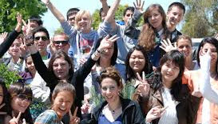

As one of the largest and most successful of California's 110 community colleges, and as one of the largest colleges in the Community College District, we take pride in its high academic standards, its excellent programs and services, and its personal approach to helping each student succeed.
Students will find a wide and diverse array of courses and programs leading to the A.A. or A.S. degree in both academic and vocational subjects, as well as programs leading to occupational certificates. Students may also pursue programs of general interest.
Because of the college's comprehensive offerings, its excellent programs, its uniquely talented faculty, and its support services, we enjoy one of the highest student transfer rates in California. Students excel when they transfer to the University of California and California State University campuses as well as other four-year institutions. Students completing vocational programs have similar success when they enter employment situations.
We offer a beautiful campus environment, including a state-of-the art Learning Resource Center, which opened in April 1998. The new Center was constructed at a total cost of $20 million, and its four stories occupy 107,000 square feet in the middle of the campus. The facility offers expanded library holdings, an enormous computer lab for student use, and advanced media facilities.The campus also includes classroom buildings, science labs, an athletics complex and fields, a theatre and fine arts facilities, and beautiful landscaping.
We provide extensive collegiate and co-curricular experiences for students, including such opportunities as student government; 20 men's and women's intercollegiate athletic teams; clubs; performance groups; an Honors Program; Service Learning and a host of activities in which students learn leadership skills, expand their academic horizons and celebrate cultural diversity.
We are fully accredited by the Accrediting Commission for Community and Junior Colleges (ACCJC), Western Association of Schools and Colleges (WASC).
This course introduces students to sound practices in creating a Website using HyperText Markup Language (HTML) and Cascading Style Sheets (CSS). Students create, validate and publish Websites to the Internet following Web standards. This course is intended for beginning Web design students and anyone interested in a career that requires skills and knowledge in Website construction.
This course introduces students to sound practices in creating a Website using Dreamweaver to write HyperText Markup Language (HTML) and Cascading Style Sheets (CSS). Emphasis is placed on the Dreamweaver interface, features and functionality. Students create, validate and publish Websites to the Internet following Web standards. This course is intended for beginning Web design students and anyone interested in a career that requires skills and knowledge in Website construction.
This course is a hands-on study of Cascading Style Sheets (CSS) in creating Web standards-compliant sites. Emphasis is placed on the use of CSS to format and position elements in Hypertext Markup Language (HTML) and applying best practices. Students apply CSS concepts and rules of specificity to achieve the design goals of a published Web site by hand coding and using an HTML editor, such as Dreamweaver. This course is designed for students studying web design and professionals updating their skills.